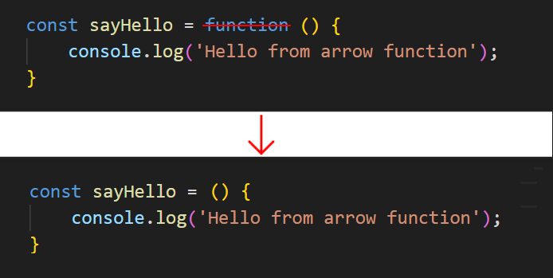
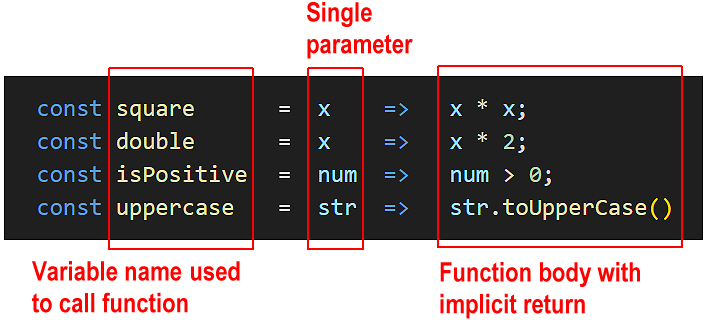

Learning Goals
At the end of this Tutorial, you will be able to:
- Create and call an arrow function.
- Use the shorthand syntax for arrow functions with only a single statement.
- Pass single or multiple arguments to an arrow function.
- Pass arrow function output back to the calling program with implicit or explicit returns.
- Immediately invoke an arrow function without calling it.
Continue using the functions.html workfile you downloaded in the Function Declarations Tutorial.
About arrow functions
A so-called arrow function is a short-hand or quick way of typing an anonymous function expression. As with regular anonymous functions, you must assign an arrow function to a variable if you want to call it from elsewhere in the program. Arrow functions are not hoisted. You must create them before you call them in your program.
You can convert a regular anonymous function to an arrow function as follows:
- Remove the function keyword. But leave the parentheses (). 
- After the () and before the opening code block {, type an equals sign and a right angle bracket character =>. This is called the ‘fat arrow‘ symbol.

That's it. You have now created an arrow function.
Copy the sample arrow function below into your functions.html file and verify it runs correctly.
// ======== ARROW FUNCTIONS ========
// Arrow function
const helloFromArrow = () => {
console.log('Hello from arrow function');
}
// Call the arrow function using the variable name
helloFromArrow();Parameters, arguments, and return values
As with regular anonymous functions, an arrow function can contain parameters that you can pass values to as arguments. And an arrow function can return a value back to the program that called it.
Arrow functions are best used when:
- There is only one statement in the function body.
- There is no or only one parameter expected by the function.
Single-statement, single-parameter arrow functions
When an arrow function contains just one input parameter, you can omit the usual parentheses () around that parameter.
Copy the following two arrow functions to your functions.html workfile.
// Arrow function without parentheses around single parameter
const greetNoParen = name => {
return `Hello, ${name}!`;
};
let greetingNoParen = greetNoParen("Mary");
console.log(greetingNoParen); // Hello, Mary!Implicit and explicit returns from arrow functions
But you can make this code even more concise! When an arrow function contains only one statement, you can:
- Write the arrow function on one line.
- Omit the { } around the code block.
- Omit the return keyword.
In functions.html, update your arrow function as shown below and verify it still works.
// Arrow function without parentheses
const greetNoParen = name => `Hello, ${name}!`;No { } and no return keyword needed!
When an arrow function contains only a single statement, omitting the return keyword creates an implicit return. See the illustration below.
Copy the following arrow functions with implicit returns to your functions.html workfile.
// Single-statement arrow functions with implicit returns
const shortGreet = () => 'Hello with no parameter!';
console.log(shortGreet()); // Hello with no parameter!
const double = x => x * 2;
console.log(double(10)); // 20
const halfNum = num => (num / 2);
console.log(halfNum(200)); // 100
const add15ToPrice = num => (num + 15);
console.log(add15ToPrice(100)); // 115
const increasePriceby5Percent = num => (num + (num * .05));
console.log(increasePriceby5Percent(200)); // 210
const isPositive = num => num > 0;
console.log(isPositive(5)); // true
const uppercase = str => str.toUpperCase()
console.log(uppercase("hello")); // HELLOVerify the above functions all run without error.
Single-statement, multiple-parameter arrow functions
Here are some examples of single-statement arrow functions with implicit returns that accept multiple parameters.
// Arrow functions with multiple parameters and implicit returns
// Add three numbers
const addNums = (x, y, z) => (x + y + z);
console.log(addNums(4, 8, 16)); // 28
// Divide one number by another
const divideNum = (num1, num2) => (num1 / num2);
console.log(divideNum(16, 8)); // 2
// Calculate product price after 20% tax
const finalPrice = (price, tax) => (price + (price * tax));
console.log(finalPrice(50, .20)); // 60Copy the above functions to your functions.html workfile and verify they run without error.
Arrow functions with multiple statements
When the function body contains multiple statements, you must use curly braces { } and explicitly include the return statement if you want a value sent back to the calling program.
Copy the following two arrow functions with explicit returns to your functions.html workfile.
// Arrow functions with multiple statements and explicit returns
const addTwoNums = (a, b) => {
const sum = a + b;
return sum;
};
console.log(addTwoNums(5, 12)); // 17
const multipleTwoNums = (a, b) => {
const product = a * b;
return product;
};
console.log(multipleTwoNums(5, 12)); // 60The above two functions should run without error. However, it is NOT RECOMMENDED to use arrow functions when you have multiple statements in the function body. You will not shorten the function syntax significantly and increase the likelihood of errors.
When a function body needs multiple statements, it is best to use a function declaration or a regular anonymous function.
Immediately-invoked arrow functions
Like a regular anonymous function, you can amend the syntax of an arrow function so that it is run without being called from elsewhere in the program.
To invoke an arrow function immediately, wrap the function inside a parenthesis () and add another parenthesis () after it.
Copy the arrow function below to your functions.html workfile and verify it runs without being called.
// Immediately invoked arrow functions
(() => {
console.log("Hello from arrow function");
})();Try it yourself
In your workfile...
---
Create these arrow functions that work with multiple parameters:
- Create combineWords that takes two strings and joins them with a space
- Create calculateArea that computes the area of a rectangle (width × height)
- Create calculateVolume that computes the volume of a box (width × height × depth)
---
Convert these anonymous functions to arrow functions:
// Simple greeting
const sayHelloUser = function() {
return "Hello!";
};
// Square a number
const squareNum = function(x) {
return x * x;
};
// Check if string is empty
const isEmptyStr = function(str) {
return str.length === 0;
};
---
More learning resources
Tutorial Quiz
Tutorial Podcast
Sample AI prompts
I'm learning about arrow functions in JavaScript. Could you compare them with regular anonymous functions, focusing specifically on syntax differences and use cases? Please provide practical examples showing when arrow functions would be the better choice and when they wouldn't be ideal.I understand the basic syntax of arrow functions with implicit returns, but I'm confused about when I can and can't use them. Could you create a guide showing different scenarios where implicit returns work and don't work, with examples of common mistakes to avoid?